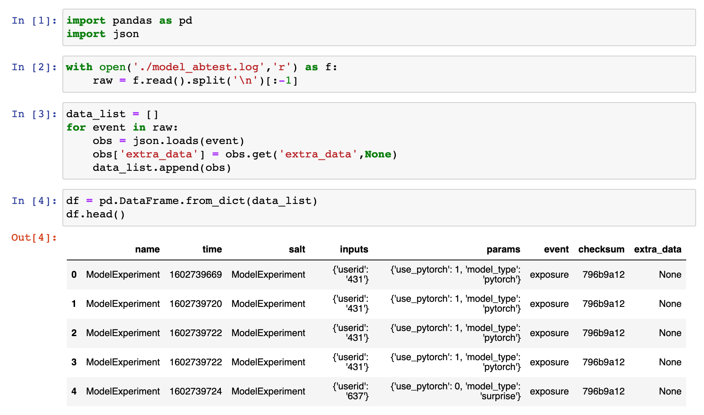
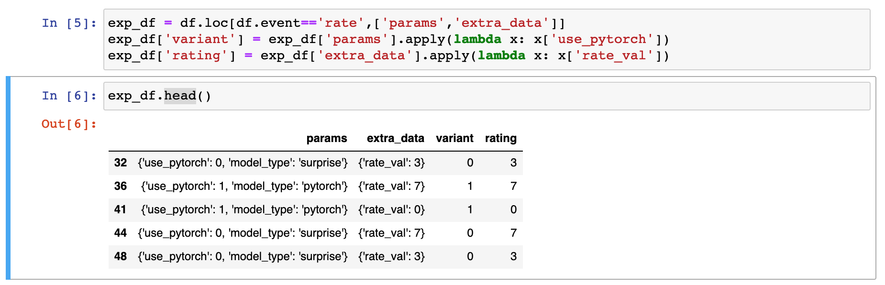
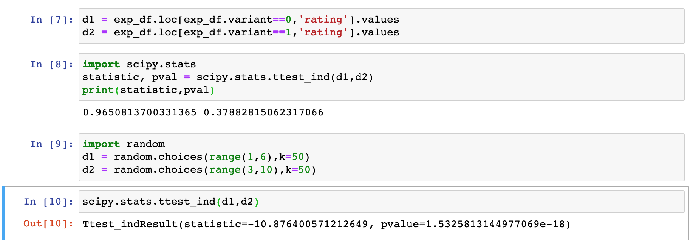

planout (see here) to do the randomization.Assuming flask, surpriselib, pytorch and others are already installed, we can install planout using the following:
pip install planout
Note that its always good to do the above in a project specific conda environment (such as datasci-dev we have been using before).
The key idea with using planout here is as follows. While deciding to serve the recommendations to the user when they login and reach the homepage or an appropriate screen, we will randomly pick either the pytorch model or the surpriselib model.
In particular, the user is assigned to a random cohort in the experiment when they login using help from planout.
This is accomplished by creating an instance of an appropriately defined ModelExperiment class.
model_perf_exp = ModelExperiment(userid=session['userid'])
model_type = model_perf_exp.get('model_type')
Here the class ModelExperiment is defined in a straightforward manner:
class ModelExperiment(SimpleExperiment):
def setup(self):
self.set_log_file('model_abtest.log')
def assign(self, params, userid):
params.use_pytorch = BernoulliTrial(p=0.5, unit=userid)
if params.use_pytorch:
params.model_type = 'pytorch'
else:
params.model_type = 'surprise'
The setup function defines where the log for the experiment is stored (this can be changed to a different storage location).
The assign function uses the user’s ID to bucket them into one of the control or treatment cohorts. In our example, lets assume that the surpriselib based recommendation model is the control.
The complete flask script is as follows.
from surprise import Dataset
from surprise.dump import load as surprise_model_load
import numpy as np
import torch
from torch import nn
import pandas as pd
import random
from uuid import uuid4
from flask import (
Flask,
session,
request,
redirect,
url_for,
render_template_string
)
from planout.experiment import SimpleExperiment
from planout.ops.random import *
class ModelExperiment(SimpleExperiment):
def setup(self):
self.set_log_file('model_abtest.log')
def assign(self, params, userid):
params.use_pytorch = BernoulliTrial(p=0.5, unit=userid)
if params.use_pytorch:
params.model_type = 'pytorch'
else:
params.model_type = 'surprise'
class MF(nn.Module):
itr = 0
def __init__(self, n_user, n_item, k=18, c_vector=1.0, c_bias=1.0):
super(MF, self).__init__()
self.k = k
self.n_user = n_user
self.n_item = n_item
self.c_bias = c_bias
self.c_vector = c_vector
self.user = nn.Embedding(n_user, k)
self.item = nn.Embedding(n_item, k)
# We've added new terms here:
self.bias_user = nn.Embedding(n_user, 1)
self.bias_item = nn.Embedding(n_item, 1)
self.bias = nn.Parameter(torch.ones(1))
def __call__(self, train_x):
user_id = train_x[:, 0]
item_id = train_x[:, 1]
vector_user = self.user(user_id)
vector_item = self.item(item_id)
# Pull out biases
bias_user = self.bias_user(user_id).squeeze()
bias_item = self.bias_item(item_id).squeeze()
biases = (self.bias + bias_user + bias_item)
ui_interaction = torch.sum(vector_user * vector_item, dim=1)
# Add bias prediction to the interaction prediction
prediction = ui_interaction + biases
return prediction
def loss(self, prediction, target):
loss_mse = F.mse_loss(prediction, target.squeeze())
# Add new regularization to the biases
prior_bias_user = l2_regularize(self.bias_user.weight) * self.c_bias
prior_bias_item = l2_regularize(self.bias_item.weight) * self.c_bias
prior_user = l2_regularize(self.user.weight) * self.c_vector
prior_item = l2_regularize(self.item.weight) * self.c_vector
total = loss_mse + prior_user + prior_item + prior_bias_user + prior_bias_item
return total
def get_top_n_pytorch(model,trainset,urid_input,n=10):
testset = trainset.build_anti_testset()
preds = []
for urid, irid, _ in testset:
if urid==urid_input:
preds.append((irid,float(model(torch.tensor([[int(trainset.to_inner_uid(urid))]])))))
# Then sort the predictions and retrieve the n highest ones.
preds.sort(key=lambda x: x[1], reverse=True)
return preds[:n]
def get_top_n_surprise(model,trainset,urid_input,n=10):
testset = trainset.build_anti_testset()
preds = []
for urid, irid, _ in testset:
if urid==urid_input:
preds.append((irid,float(model.predict(urid, irid).est)))
# Then sort the predictions and retrieve the n highest ones.
preds.sort(key=lambda x: x[1], reverse=True)
return preds[:n]
We read the models from disk and some associated metadata. Although we are loading the training data below, this is only for convenience and should not be done ideally.
#Data
df = pd.read_csv('./movies.dat',sep="::",header=None,engine='python')
df.columns = ['iid','name','genre']
df.set_index('iid',inplace=True)
data = Dataset.load_builtin('ml-100k')
trainset = data.build_full_trainset()
#Parameters for the pytorch model
lr = 1e-2
k = 10 #latent dimension
c_bias = 1e-6
c_vector = 1e-6
model_pytorch = MF(trainset.n_users, trainset.n_items, k=k, c_bias=c_bias, c_vector=c_vector)
model_pytorch.load_state_dict(torch.load('./pytorch_model'))
model_pytorch.eval()
_, model_surprise = surprise_model_load('./surprise_model')
We start with the flask app setup below.
app = Flask(__name__)
app.config.update(dict(
DEBUG=True,
SECRET_KEY='MODEL_TESTING_BY_THEJA_TULABANDHULA',
))
Below is the recommendation function that responds with recommendations from either the surprise model or the pytorch model.
@app.route('/',methods=["GET"])
def main():
# if no userid is defined make one up
if 'userid' not in session:
session['userid'] = str(random.choice(trainset.all_users()))
model_perf_exp = ModelExperiment(userid=session['userid'])
model_type = model_perf_exp.get('model_type')
resp = {}
resp["success"] = False
print(model_type,resp,session['userid'])
try:
if model_type=='pytorch':
user_ratings = get_top_n_pytorch(model_pytorch,trainset,session['userid'],n=10)
elif model_type=='surprise':
user_ratings = get_top_n_surprise(model_surprise,trainset,session['userid'],n=10)
print(user_ratings)
resp["response"] = [df.loc[int(iid),'name'] for (iid, _) in user_ratings]
resp["success"] = True
return render_template_string("""
<html>
<head>
<title>Recommendation Service</title>
</head>
<body>
<h3>
Recommendations for userid {{ userid }} based on {{ model_type }} are shown below: <br>
</h3>
<p>
{% for movie_item in resp['response'] %}
<h5> {{movie_item}}</h5>
{% endfor %}
</p>
<p>
What will be your rating of this list (rate between 1-10 where 10 is the highest quality)?
</p>
<form action="/rate" method="GET">
$<input type="text" length="10" name="rate"></input>
<input type="submit"></input>
</form>
<br>
<p><a href="/">Reload without resetting my user ID. I'll get the same recommendations when I come back.</a></p>
<p><a href="/reset">Reset my user ID so I am a different user and will get re-randomized into a new treatment.</a></p>
</body>
</html>
""", userid=session['userid'], model_type=model_type, resp=resp)
except:
return render_template_string("""
<html>
<head>
<title>Recommendation Service</title>
</head>
<body>
<h3>
Recommendations for userid {{ userid }} based on {{ model_type }} are shown below. <br>
</h3>
<p>
{{resp}}
</p>
<p>
What will be your rating of this list (rate between 1-10 where 10 is the highest quality)?
</p>
<form action="/rate" method="GET">
<input type="text" length="10" name="rate"></input>
<input type="submit"></input>
</form>
<br>
<p><a href="/">Reload without resetting my user ID. I'll get the same recommendations when I come back.</a></p>
<p><a href="/reset">Reset my user ID so I am a different user and will get re-randomized into a new treatment.</a></p>
</body>
</html>
""", userid=session['userid'], model_type=model_type, resp=resp)
Below is the resetting function that essentially switches the user ID.
@app.route('/reset')
def reset():
session.clear()
return redirect(url_for('main'))
Below is the rating function that documents the received rating.
@app.route('/rate')
def rate():
rate_string = request.args.get('rate')
try:
rate_val = int(rate_string)
assert rate_val > 0 and rate_val < 11
model_perf_exp = ModelExperiment(userid=session['userid'])
model_perf_exp.log_event('rate', {'rate_val': rate_val})
return render_template_string("""
<html>
<head>
<title>Thank you for the feedback!</title>
</head>
<body>
<p>You rating is {{ rate_val }}. Hit the back button or click below to go back to recommendations!</p>
<p><a href="/">Back</a></p>
</body>
</html>
""", rate_val=rate_val)
except:
return render_template_string("""
<html>
<head>
<title>Bad rating!</title>
</head>
<body>
<p>You rating could not be parsed. That's probably not a number between 1 and 10, so we won't be accepting your rating.</p>
<p><a href="/">Back</a></p>
</body>
</html>
""")
# start the flask app, allow remote connections
app.run(host='0.0.0.0')
Notice that currently we are logging events such as exposure (the recommendations were shown) and users explicitly rating into a simple log file in the same directory.
(datasci-dev) ttmac:code_lecture08 theja$ ls
flask_pytorch_model.py model_abtest.log movies.dat pytorch_model surprise_model
flask_surprise_model.py model_testing.py pytorch_inference.ipynb recommend.py two_sample_test.ipynb
(datasci-dev) ttmac:code_lecture08 theja$ head -n3 model_abtest.log
{"name": "ModelExperiment", "time": 1602739669, "salt": "ModelExperiment", "inputs": {"userid": "431"}, "params": {"use_pytorch": 1, "model_type": "pytorch"}, "event": "exposure", "checksum": "796b9a12"}
{"name": "ModelExperiment", "time": 1602739720, "salt": "ModelExperiment", "inputs": {"userid": "431"}, "params": {"use_pytorch": 1, "model_type": "pytorch"}, "event": "exposure", "checksum": "796b9a12"}
{"name": "ModelExperiment", "time": 1602739722, "salt": "ModelExperiment", "inputs": {"userid": "431"}, "params": {"use_pytorch": 1, "model_type": "pytorch"}, "event": "exposure", "checksum": "796b9a12"}
We can load this log file into a Jupyter notebook to conduct our test.

- Lets zoom into the data we care about for testing.

- We can do a simple two sample t test using the scipy.stats package.
